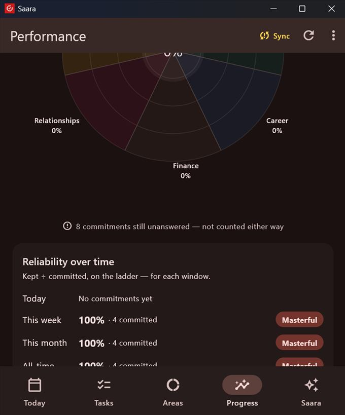

Your Progress screen is a training log. The score is simple and honest: kept ÷ committed — and it can't drift from what actually happened.
What you see
Integrity across areas — a radar wheel; each area's fill = its score. Tap a wedge to drill in.
Reliability over time — Today / This week / This month / All-time, each with its % and your ladder level.
On time — a separate timeliness measure. A kept word that was late is still kept — timeliness is its own path, never a mark against the score.
Streak, weekly progress, and kept-word counts (completed, missed, cancelled, declined-not-counted).

Progress — the integrity radar, and your reliability on the ladder for each window.
The reliability ladder
Effectiveness = kept ÷ committed, which places you on a ladder of six levels:
Level
Up to
Beginner
10%
Your word isn't a habit yet.
Learner
30%
Building the muscle.
Amateur
50%
Consistency wavers.
Professional
70%
Dependable more often than not.
Champion
85%
Highly reliable.
Masterful
100%
Your word is your bond.
A path, not a scorecard
The number is a compass, not a verdict — integrity is trained, not achieved. The system owns the facts (did it happen, and when); you own the judgment (how well); the people you gave your word to are the mirror (see committed listeners). Only released commitments count — drafts, reschedules and declines never move against you.
Check your sync before you judge the number. The score is computed from your device's ledger. A device that hasn't synced shows only a partial score — the Sync chip in the top bar tells you. See Sync your devices.